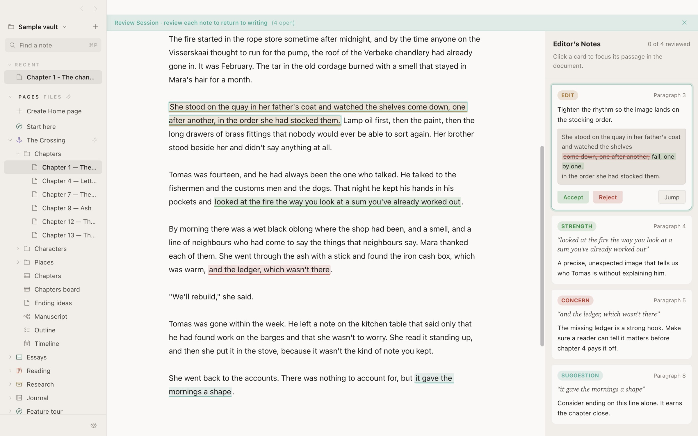
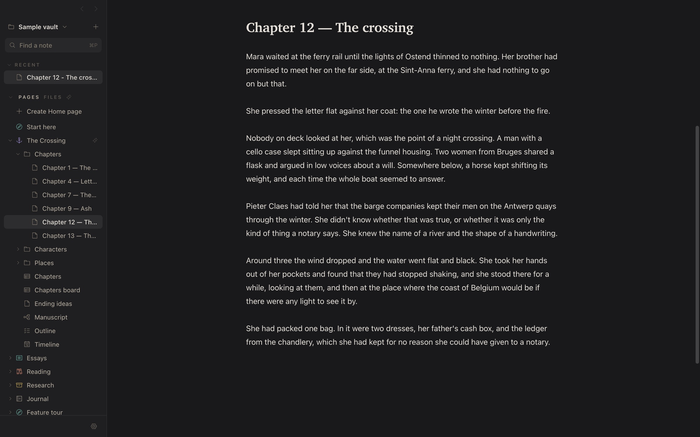
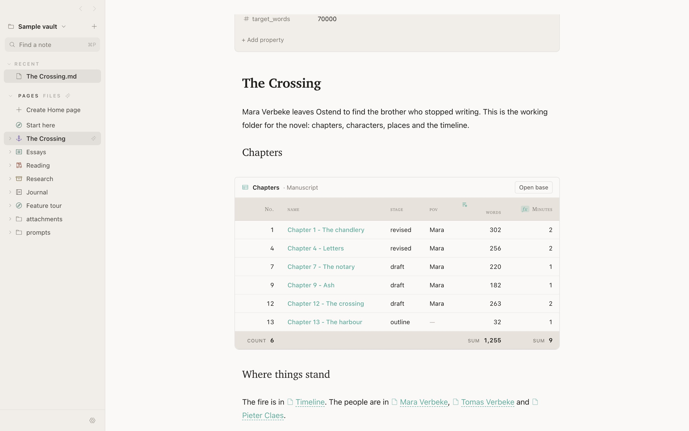
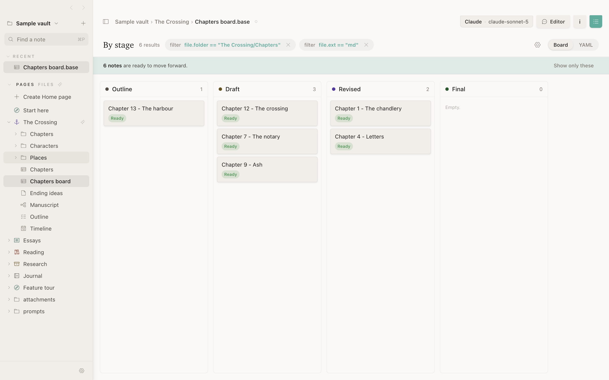

Plain files. No account needed
Write the next post.
Or the whole book.
Siriel is a calm place to write your newsletter, your posts and your video scripts, and just as good for an essay or a novel. Everything is kept as plain files on your Mac. When you want a second opinion, AI answers the way an editor would: notes in the margin, and every change shown word by word for you to accept or refuse.

Short or long, it starts on the same page.
A weekly newsletter, a LinkedIn post, a script for Thursday's video, or chapter twelve. Siriel keeps them all in one place, helps you tighten them, and gets them out the door.
Write here, paste there
Copy for publishing puts your post on the clipboard ready for Substack, Beehiiv, Ghost, WordPress or Medium, with headings, links and lists in place. One command, then paste into your draft.
Drafts that don't get lost
Keep every post, idea and half-finished thread in one folder. Save the prompts you reuse, like "turn this newsletter into five posts", as your own commands.
Hear how it soundsBeta
Have the script read back to you before you record, and track every episode on a board, from idea to published.
And the big project, too
Essays, theses and novels get chapters that link to each other, a running word count, and a full editorial read when the draft is done.
The page looks like a page.
Your text is formatted as you type: headings look like headings, lists like lists, with no second window showing a preview. Nothing on screen competes with your words, in light mode or dark.
- Everything you need on the page. Headings, lists, checklists, tables, footnotes, quotes, formulas and diagrams.
- Nothing is ever lost. Every note keeps its earlier versions for 30 days. Compare any of them and bring back one paragraph, or the whole thing.
- Find anything. Search the text of every note, see what links to the one you're reading, and rename files without breaking a single link.
- Hear it back.Beta Read aloud, a sentence at a time, in a natural voice that runs entirely on your Mac.
- Send it out. Paste it into your newsletter or blog, or export it as PDF, a web page or rich text.

Suggestions, not replacements.
Most AI writing tools hand you a new paragraph and ask you to trust it. Siriel shows you exactly what would change. Unchanged words stay plain, and each changed run is its own switch. Turn off the ones you don't want, and Accept applies what the card shows, nothing more.
Try it on the card. Click a change to keep your original wording there.
Tighten the rhythm so the image lands on the stocking order.
A full editorial read
The model reads the whole document and leaves anchored notes in the margin: strengths, concerns, suggestions and concrete edits. Click one to jump to its passage.
Work on a selection
Select a passage and ask. The whole note goes along as context, so the edit stays consistent with what's around it, but only your selection can change.
Or just talk it through
Free-typed questions get a plain answer in the composer, not a diff. "How would you title this?" gets titles, not your paragraph replaced by one.
Your own slash commands
Save the prompts you use every day as commands. Each one decides whether it answers in the margin as an edit, or in the conversation.
Briefs per folder
Put a brief in any folder (tone, audience, a glossary, things to avoid) and it goes with every request for the notes beneath it. Briefs stack, and the closest wins.
Links you already earned
Siriel finds words that already name another note and offers a link on each. It runs on your Mac and calls no model at all.
Bring your own model.
Use the provider you already pay for, the CLI you're already signed in to, or a model that never leaves your Mac. Switch any time from the toolbar.
When you use a cloud provider, the text you send goes to that company and is handled under its terms, which may allow it to keep or learn from your text depending on your plan. Check them before you send anything private. And AI can be wrong: read every suggestion before you accept it.
Ask your notes. Check the answer.
Type @vault and a question, and Siriel searches your notes for the
passages that answer it. You see who will receive the text before anything is sent,
and the answer cites the passages it used. Siriel checks every quoted word against
what was actually sent, and marks a quote it can't find instead of letting it look
sourced.
Answers with citations
"The brother" finds the notes that call him Tomas. Click a citation to see the exact words in the passage that was sent.
Continuity, gently
Compare a chapter with the rest of the vault and get places that may disagree. Fiction is full of deliberate contradictions, so it says "worth a look", never "wrong".
You decide what's read
Vault AI asks first, per vault and per provider. Leave out a folder, or mark a note
ai: private, and it's never searched.
Plan your work in the same files you write it in.
A content calendar, a pipeline of posts, or the chapters of a book: pages, tables and boards are all made from your notes, so there's no second app to keep in sync.


Your writing goes nowhere you didn't send it.
Siriel has no account, no server and no analytics. Your notes are files in a folder you choose, synced however you already sync them. Text reaches a model only when you ask, and only the model you picked.
- Files, not a database. Plain Markdown, readable by any editor, git, Obsidian or iCloud Drive. Leaving Siriel means closing it.
- Nothing leaves without you. No telemetry. The only requests are the AI calls you start, link previews you can turn off, and the update check.
- Agents kept on a leash. When Siriel uses Claude Code or Codex to write, their tools are turned off, so a note can't ask them to read your files or run commands.
- On-device when you want it. Apple's model, a local model or the natural read-aloud voice all run on your Mac, offline. Local models and the natural voice are in beta.
- Cloud AI follows the provider's rules. Text you send to Anthropic, OpenAI or any other cloud provider is handled under their terms, not ours. Pick an on-device model when that matters.
- Machine stuff stays on the machine. Search index and note history live in your home folder, never in the vault, so they don't clutter your sync.
Made for the writing, not the system around it.
Siriel sits between a focused writing app and a notes vault: the calm of the first, the plain files and links of the second, and AI that edits the way a person would. Use it instead of the app you have, or right alongside it.
| Siriel | Obsidian | iA Writer | Ulysses | Notion | |
|---|---|---|---|---|---|
| Your notes are plain files | Yes, Markdown | Yes, Markdown | Yes, Markdown | Own library; external folders optional | No, cloud pages |
| AI editing built in | Yes, as word-level diffs | Through community plugins | No, by design | Grammar and style check | Yes, Notion AI |
| Choose your model, or run it locally | Yes, 8 kinds of provider | Depends on the plugin | — | — | Hosted models only |
| Whole-document editorial review | Yes, anchored notes | Depends on the plugin | — | — | Chat about the page |
| Live preview without a split pane | Yes | Yes | Styled source, separate preview | Styled source | Rich text, not Markdown |
| Wikilinks, properties, bases | Yes, Obsidian-compatible | Yes | Partial | No | Own databases |
| Price | Free | Free; Sync and Publish paid | One-time purchase | Subscription | Free tier; AI on paid plans |
From each product's public information as of November 2026. Things change; if we've got one wrong, tell us and we'll fix it. Read the full comparison →
Questions
Is Siriel really free?
Yes. Download it and use all of it; there's no trial, account or paywall. If you use a paid AI provider, you pay them directly with your own key, or use a free on-device model instead.
Which Macs does it run on?
Macs with Apple Silicon (M1 or later). Apple has checked the app, so it opens like any other app you download, and it updates itself when a new version is out.
Do I need to use AI?
No. Siriel is a complete writing app without it. AI does nothing until you choose a provider in Settings, and even then only when you ask.
What happens to my text when I use AI?
It goes to the provider you picked, and only when you ask. With Apple's on-device model or a local model, it never leaves your Mac. With a cloud provider, it's handled under that provider's terms, which can include keeping it or using it to train their models, depending on your plan. AI also makes mistakes, so treat every suggestion as a suggestion.
Can I open my existing Obsidian vault?
Yes. Press ⌘O and choose the folder. Wikilinks, frontmatter properties,
callouts, embeds and .base files work as they are, and Siriel writes
nothing Obsidian can't read. Use both on the same vault if you like.
Where are my notes stored, and how do they sync?
Wherever you put the folder. Siriel doesn't sync; it works with whatever you already use: iCloud Drive, Dropbox, git, or a USB stick. It's built to stay responsive on iCloud Drive even while it's syncing.
Which AI is best to start with?
If your Mac has Apple Intelligence, the on-device model is free and needs no setup, which makes it a good first try. For a full-document review of a long chapter, a larger model like Claude or GPT gives deeper notes. You can switch per request.
Is there an iPhone or Windows version?
Not yet. Siriel is a Mac app today. Your notes are plain files, so any Markdown app can open them on other devices in the meantime.
Is there a warranty?
No. Siriel is free and provided as is, without any warranty. You use it at your own risk, and its developer isn't responsible for lost data, misuse or any other problem that comes from using it. Keep backups of anything that matters.
Start with the next sentence.
Download Siriel, open a folder of notes, or start a new one. It takes a minute, and your files stay yours.